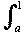
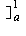
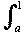
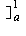

The line y = ax meets y = x2 where ax = x2 ⇒ at P we have x = a.
The line y = ax meets y = x2 where ax = x2 ⇒ at P we have x = a.Then d1(ax, x2) =
 (ax - x2) dx +  (x2 - ax) dx = [ax2/2 - x3/3 + [x3/3 - ax2/2 = a3/3 - a/2 + 1/3.
(ax - x2) dx +  (x2 - ax) dx = [ax2/2 - x3/3 + [x3/3 - ax2/2 = a3/3 - a/2 + 1/3. Differentiate to find the minimum of this.
This occurs when a2 - 1/2= 0 or at a = 1/√2 = 0.707 (approximately).